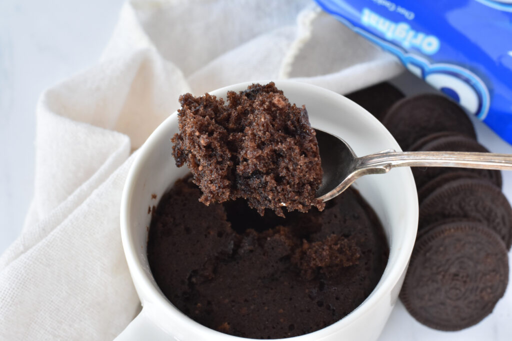

Ingredients
- 5 Oreos
- 1/4 cup milk
- 1 tablespoon caster / superfine sugar
- 1 tablespoon plain / all-purpose flour
- 1/2 teaspoon baking powder
- 1 teaspoon unsweetened cocoa powder
Instructions
- In a large microwave-safe mug (350 mL / 12.5 oz capacity or larger), mash together FOUR of the Oreos and milk until the Oreos are mostly dissolved into the milk. Add caster sugar, flour, baking powder and cocoa powder. Stir until well combined.
- Press the extra Oreo into the centre of the cake and cover with batter. Microwave for 1 minute on full power (based on an 1100 watt microwave) until there doesn't appear to be any raw batter left. Enjoy!